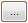
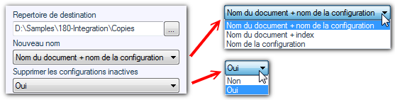

Opération possible sur les pièces ou les assemblages. 
Cette opération permet de décliner un nouveau document par configuration (pour une pièce ou un assemblage).
Le répertoire de destination est à sélectionner en cliquant sur .
Le nom des nouveaux fichiers sera généré en fonction de l'option choisie dans "Nouveau nom".
La 3ième information si l'on supprime ou non les configurations inactives dans le nouveau document généré.
Exemple : Toutes les déclinaisons seront enregistrées dans le répertoire "D:\Samples\180-Integration\Copies". Le nom généré sera composé du nom du document suivi du nom de la configuration. L'option étant sur "OUI"toutes les configurations inactives seront supprimées dans le nouveau document (donc dans ce cas il n'y aura plus qu'une configuration). Si l'option est sur "Non" le document généré comporte encore toutes les configurations initiales et seule la configuration nommée est active.

Si le répertoire de destination n'est pas spécifié, les déclinaisons seront enregistrées dans le répertoire du document traité.